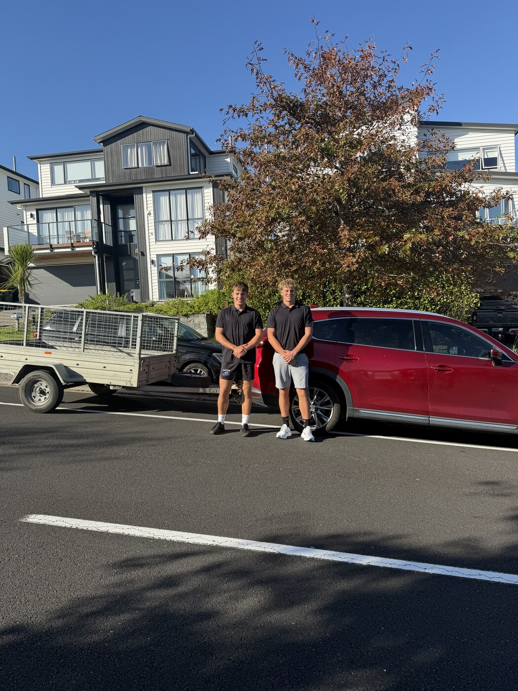
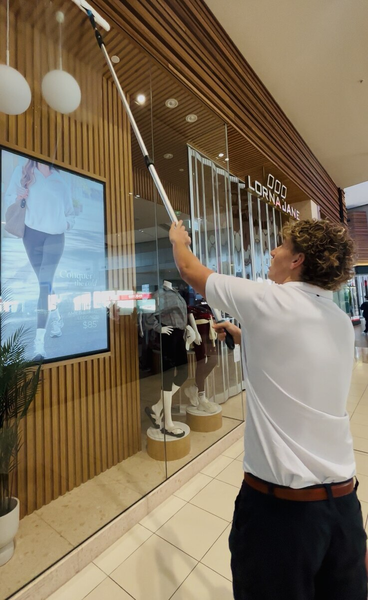
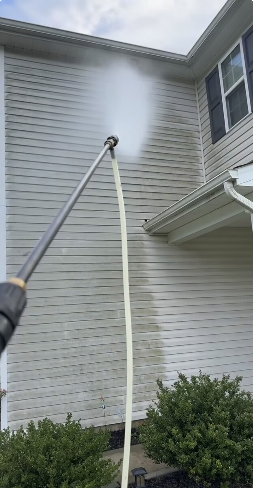
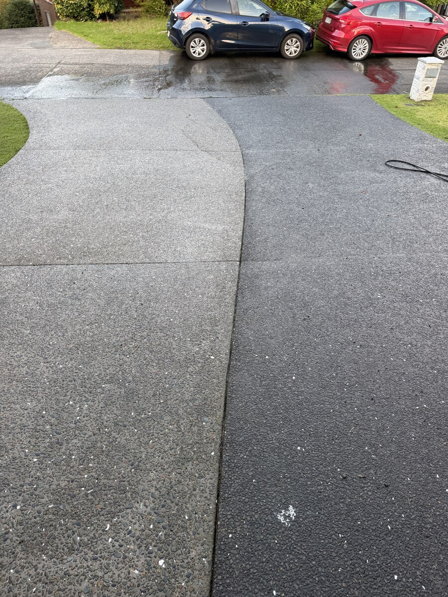
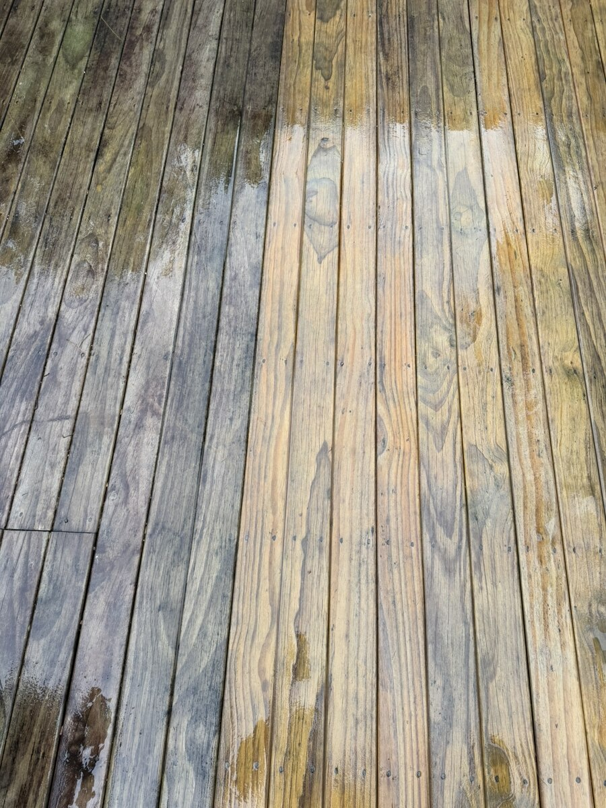
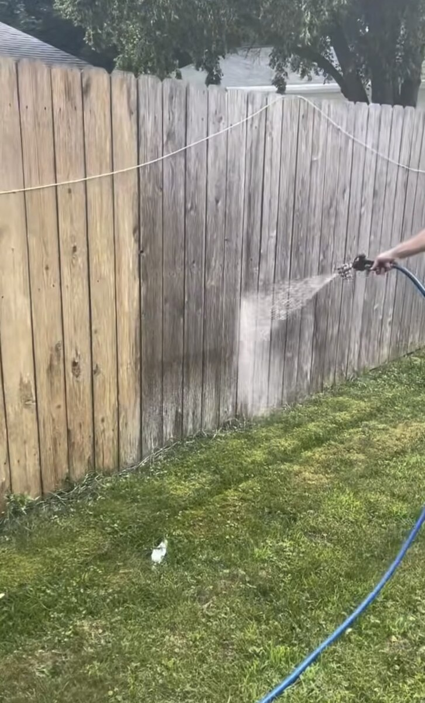
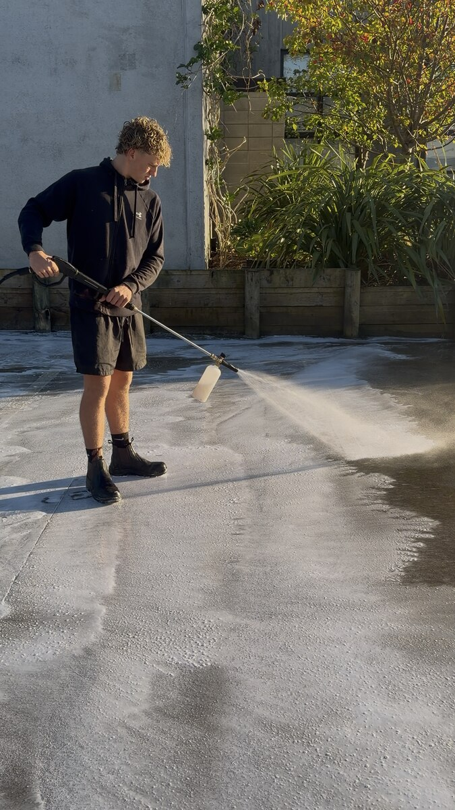
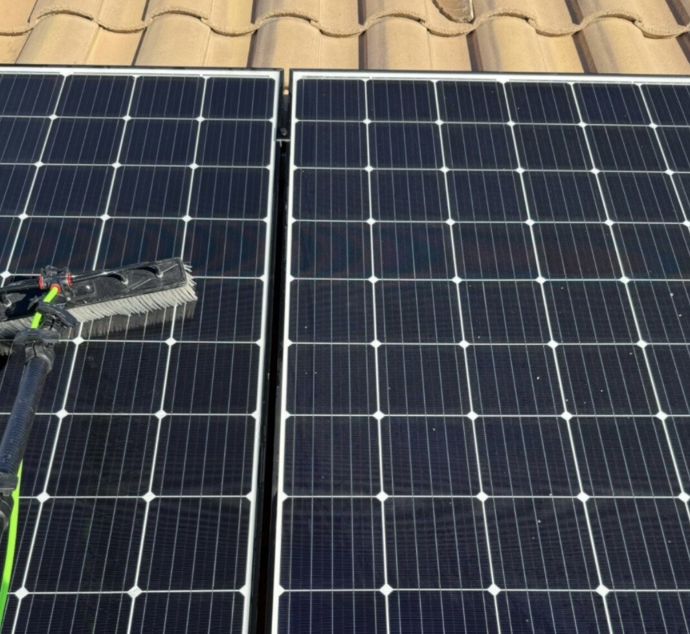

Sparkling windows.
Spotless exteriors, every time.
Luck's Cleaning Services brings a careful, detail-first approach to window cleaning, house & driveway washing and more — for homes and businesses across the North Shore.

one standard
A young business built on doing the job properly.
Luck's Cleaning Services was founded by Jacob and Arlo on a simple idea: show up on time, treat every property like it's our own, and leave glass and surfaces genuinely spotless — not just rinsed. We handle everything from storefront windows to home exteriors and driveways across Auckland's North Shore.
- Streak-free window cleaning, inside and out
- Driveway, house, deck & fence restoration across the North Shore
- Residential and commercial properties welcome
The services we offer.
We keep our focus tight so every job gets our full attention and the right equipment.

Window Cleaning
Interior & exterior glass, tracks, sills and frames — residential and commercial, hand-finished streak-free.
Get a Quote
House Washing
Exterior walls and cladding — mould, mildew and grime lifted safely, with pressure matched to the surface.
Get a Quote
Driveway Cleaning
Pressure washing that lifts oil stains, moss and built-up grime from concrete, pavers and asphalt.
Get a Quote
Deck Restoration & Treatment
Restoring decks and outdoor entertaining areas — clearing grime and grey weathering to bring timber back to life.
Get a Quote
Fence Restoration & Treatment
Freshening up timber and panel fencing — clearing dirt, moss and grime to lift the whole boundary line.
Get a Quote
Commercial Cleaning
Regular or one-off window and exterior cleaning for storefronts, offices and commercial properties — scheduled around your business.
Get a Quote
Solar Panel Cleaning
Dust and grime quietly cut into panel output. A careful brush clean helps your system perform the way it should.
Get a QuoteWhy customers stick with us.
We built this business on the details other cleaners skip.
Show Up On Time
We schedule realistically and communicate clearly, so you're never left waiting around.
Careful With Property
Ladders, poles and equipment placed thoughtfully — we treat your space the way we'd want ours treated.
Genuinely Thorough
Streak-free glass, clean sills and edges — we don't rush past the finishing details.
Local & Accountable
A North Shore business run by people you can actually reach — not a call centre.